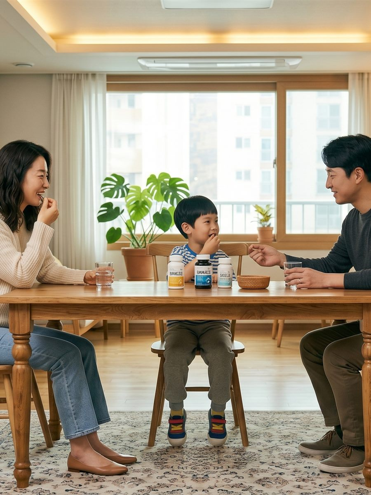

Nature · Food · Science
자연에서 찾고,
자연에서 찾고,
근거로 증명하다.
원료 탐색부터 안전성 검토와 임상 설계까지.
-인정원료
-식품원료
-프로토콜
From origin to evidence
하나의 원료가
하나의 원료가
건강의 근거가 되기까지.
01탐색식품과 기능성 원료의 가능성
02검증안전성과 규제 적합성 확인
03설계기능성별 임상 근거의 구조화
Research toolkit
지금 필요한
지금 필요한
실무 도구로.
Regulatory Pre-check
원료 규제 사전판정
원료명 하나로 반입차단, 식품원료, 개별인정 및 한시적 인정 이력을 교차 대조합니다.
Ingredient Search
원료검색
인정 유형별 원료와 신청업체 정보를 조회합니다.
0건최근 인정순
Safety Database
안전성 DB
식품에 사용할 수 있는 원료와 국내 반입차단 원료를 교차 확인합니다.
0건식품원료 기준
Protocol
기능성별 프로토콜
대상자 모델, 평가변수, 전임상 모델과 작용기전을 확인합니다.
0건기능성 평가 기준
Compare
기능성별 원료 비교
동일 기능성 원료를 최대 3개까지 선택하여 비교합니다.
0 / 3 선택